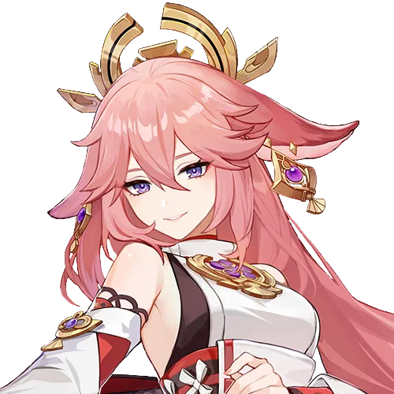

Characters
-
- 雷電将軍
CV:沢城みゆき - 誕生日6月26日/神の心: 雷
紹介: 御建鳴神主尊大御所様 永劫不変の「永遠」を稲妻の民に約束する。
- 雷電将軍
-

- 八重神子
CV:佐倉綾音 - 誕生日6月27日/神の目:雷
紹介: 鳴神大社の宮司様/「八重堂」の編集長 華やかな見た目の裏には、思いもよらぬ知性と奸智が隠されている。
- 八重神子
-

- 珊瑚宮心海
CV: 三森すずこ - 誕生日2月22日/神の目:水
紹介:海祇島の「現人神の巫女」 海祇島すべての事務を担当している少女。
- 珊瑚宮心海